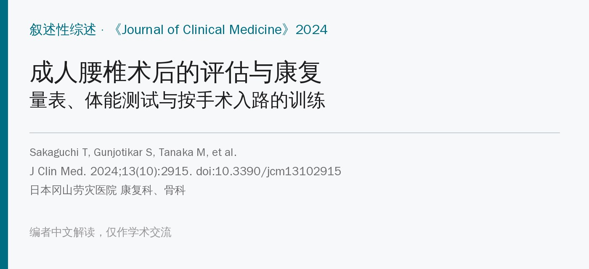
🔖原文信息（编者中文重排）
📚 文献信息
▪ Sakaguchi T, Gunjotikar S, Tanaka M, Komatsubara T, Latka K, Ekade SJ, Prabhu SP, Takamatsu K, Yasuda Y, Nakagawa M. Evaluation and Rehabilitation after Adult Lumbar Spine Surgery. J Clin Med. 2024;13(10):2915. doi:10.3390/jcm13102915
▪ 中文题目：成人腰椎术后的评估与康复
▪ 作者单位：日本冈山劳灾医院康复科、骨科
▪ 文章类型：叙述性综述，没有检索策略和纳入标准，很多内容是作者团队自己的临床做法
人口老龄化让脊柱手术越做越多，有研究统计脊柱手术量是 15 年前的 2.4 倍；微创、经皮椎弓根螺钉、导航等技术也让融合术式越来越多样。
术后康复很重要，但怎么练、什么时候练、练到什么程度，至今没有共识。这篇综述把三件事放在一起讲：腰痛运动疗法的历史、术后怎么评估（量表和体能测试），以及术后具体怎么练。
作者的核心观点是：术后康复要“因人而异、因术式而异”——看清手术伤了哪些肌肉，针对性地练回来；同时，现在的康复偏重肌力，平衡讲得太少，两者应该同等重视。
原文表 1 重要的腰椎训练方法（编者翻译）
| 年份 | 作者 | 方法 |
|---|---|---|
| 1937 | Williams | 腰椎屈曲训练 |
| 1955 | Kelly | 悬吊训练 |
| 1962 | Pheasant | 姿势构建 |
| 1968 | Cailliet | 腰椎侧屈训练 |
| 1971 | Böhler | 腰椎伸展训练 |
| 1979 | McKenzie | 腰椎伸展训练 |
表中年份和参考文献对不上，见文末“原文里对不上的地方”
• Williams 屈曲训练（1937）：强化腹肌、放松腰部竖脊肌
• Kelly 悬吊（1955）：放松腰部肌肉，扩大椎间孔、缓解肌痉挛、松解小关节
• Böhler、McKenzie 伸展训练（1971、1979）：强调腰伸肌，改善活动度和姿势
• 运动控制稳定训练：近年流行于慢性非特异性腰痛，在中立位做核心和背肌的等长收缩
• WHO 2023 年发布首个慢性原发性腰痛管理指南，建议结构化运动治疗和脊柱手法
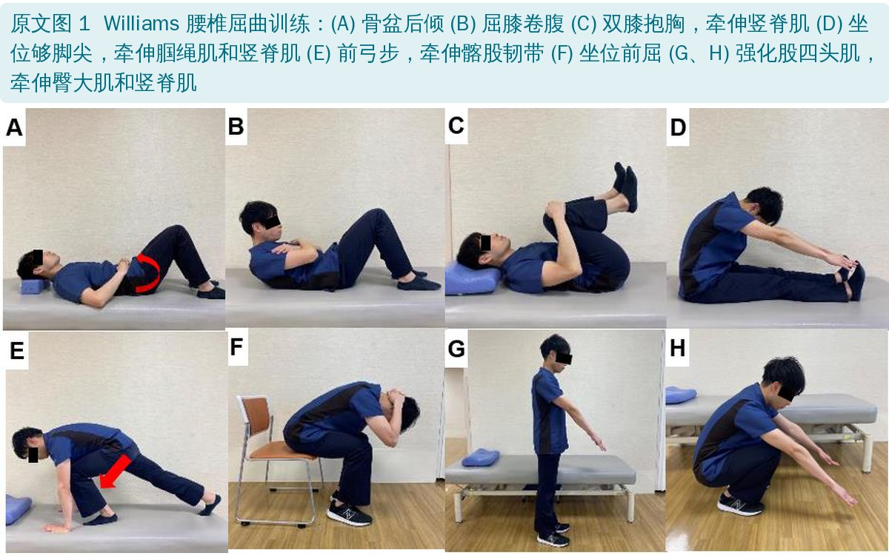
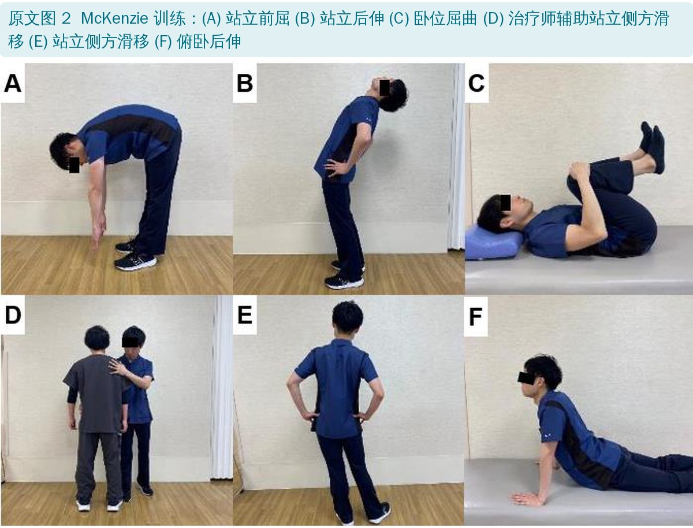
原文表 2 腰椎术后康复干预示例（编者翻译）
| 类别 | 内容 | 举例 |
|---|---|---|
| 患者教育与自我管理 | 教患者管理自己病情的技能 | 怎么应对疼痛；活动对减轻疼痛的作用；术后限制和工作姿势；防止疼痛加重；分步骤回归工作 |
| 早期活动 | 有人监督或无人监督的结构化训练 | 牵伸、肌力、耐力、闭链神经肌肉训练、关节活动度训练 |
| 手法治疗 | 肌筋膜放松、神经松动、扳动（高速低幅）、松动（低速、关节被动范围内） | 肌筋膜放松、神经松动、按摩、腰椎扳动 / 松动 |
| 辅助技术 | 维持或改善功能、减少障碍的器具 | 助行器、穿袜辅具、穿裤辅具、鞋拔、拾物器 |
患者报告结局（PRO）能把疾病对日常生活的影响量化。看变化时要分清两个阈值：最小可测变化（MDC）——超过它才不是测量误差；最小临床重要差异（MCID）——超过它患者才真正感觉到变好。此外还有患者可接受症状状态（PASS）：分数到了这个值，患者就觉得自己“还行”了。
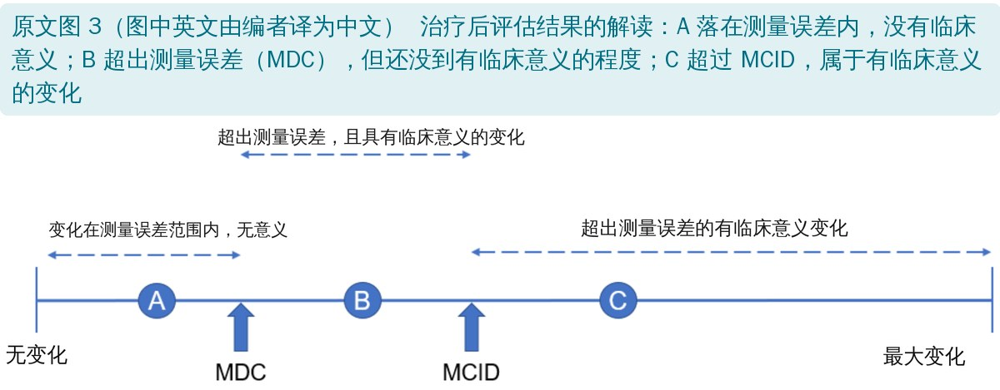
原文表 3 腰椎术后 PRO 的 MCID（编者翻译）
| 研究 | 量表 | MCID | 术式 | 诊断 |
|---|---|---|---|---|
| Parker 2011 | ODI 腰痛 VAS 腿痛 VAS | 14.9 2.1 2.8 | TLIF | 退变性腰椎滑脱 |
| Parker 2012 | ODI 腰痛 VAS | 4 3 | 腰椎融合（翻修） | 假关节 |
| Johnsen | ODI | 12.88 | 椎间盘置换 | 退变性疾病 |
| Solberg | ODI 腰痛 NRS 腿痛 NRS | 20 2.5 3.5 | 椎间盘切除 | 腰椎间盘突出 |
| Yoshida | ODI | 11 | 后路矫形融合 | 成人脊柱畸形 |
| Fukushima | ZCQ 症状 ZCQ 功能 | 1.0 0.6 | 显微内镜椎板切除 | 腰椎管狭窄 |
ODI 满分 100，VAS / NRS 满分 10。同一量表在不同术式、不同人群中的 MCID 差别很大，用时要找对口的数值
常用量表一览（编者根据原文整理）
| 量表 | 用途 | 要点 |
|---|---|---|
| RMDQ | 腰痛相关功能障碍 | 最常用的腰椎专用量表；缺心理维度，只有腿痛的患者不好答；α = 0.92 |
| ODI | 腰痛对日常生活的影响 | 也能反映腿痛的影响；对变化比通用量表敏感；成人脊柱畸形中 α = 0.87 |
| ZCQ | 腰椎管狭窄 | 症状严重度、功能障碍、治疗满意度 3 个维度；α = 0.78 |
| SRS-22 | 脊柱畸形 | 疼痛、功能、自我形象、手术满意度 4 个维度；与矢状面平衡（SVA、骨盆倾斜）相关 |
| LSDI | 腰椎僵硬 | 专门评估融合后腰椎僵硬对生活的影响；融合节段越长越差，满意度越低；α = 0.89 |
α 为原文报告的 Cronbach α（内部一致性）。原文附录给了 RMDQ 和 ODI 问卷全文，本文未转载
腰椎管狭窄是 65 岁以上患者做脊柱手术最常见的诊断，这些患者常合并运动障碍综合征（locomotive syndrome），所以除了问卷，还要实打实地测体能。
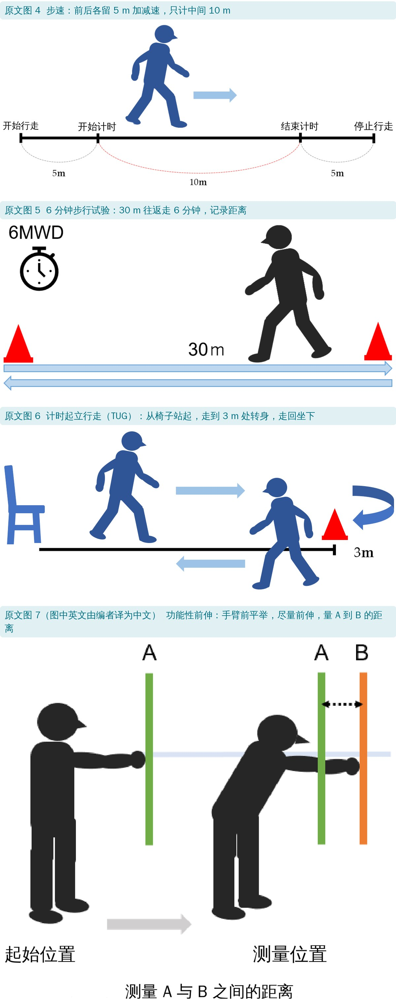
常用体能测试和 MCID（编者根据原文整理）
| 测试 | 怎么测 | 解读 | 术后 MCID |
|---|---|---|---|
| 步速 | 中间 10 m 计时，前后各留 5 m | ≤ 0.8 m/s 算步速下降；和术后疼痛、功能障碍相关 | 0.1 m/s（成人脊柱畸形） |
| 6 分钟步行 | 30 m 往返走 6 分钟 | 患者自报的步行距离比实测少 31%，评估间歇性跛行要实测 | 57.5 m（腰椎管狭窄） |
| TUG | 起立、走 3 m、转身、走回坐下 | < 11.5 s 无障碍；11.5～13.4 s 轻度；13.4～18.4 s 中度；> 18.4 s 重度 | 2.0 s（成人脊柱畸形） 2.1 s（腰椎退变） |
| 功能性前伸 | 手臂前平举，尽量前伸，量距离（cm） | 依赖躯干控制和核心、背肌力量；术后椎旁肌损伤会让它变差 | 原文未给 |
| BESTest / Mini-BESTest | 6 个系统 36 项 / 4 个维度 14 项，每项 0～3 分 | 成人脊柱畸形患者得分低于健康老人，且影响生活质量；BESTest 太长，临床多用 Mini-BESTest | 原文未给 |
| 三维动作分析、测力台 | 实验室步态分析 | 细致，但贵、操作和分析都复杂 | — |
| 三轴加速度计 | 腰部佩戴，算躯干加速度的均方根（RMS） | RMS 越大，步行晃动越大；便宜、随处可测 | — |
编者整理。步速和 TUG 在成人脊柱畸形中的 MCID 来自作者团队自己的研究
• 预期性姿势调整：坐到站、踮脚、单腿站
• 反应性姿势控制：向前、向后、向侧方的保护性跨步
• 感觉定向：睁眼站硬地面、闭眼站泡沫垫、闭眼站斜坡
• 动态步态：变速走、转头走、转身走、跨障碍、双任务 TUG
编者按 Mini-BESTest 原始版本整理。原文表 5 的条目编号有错，见文末
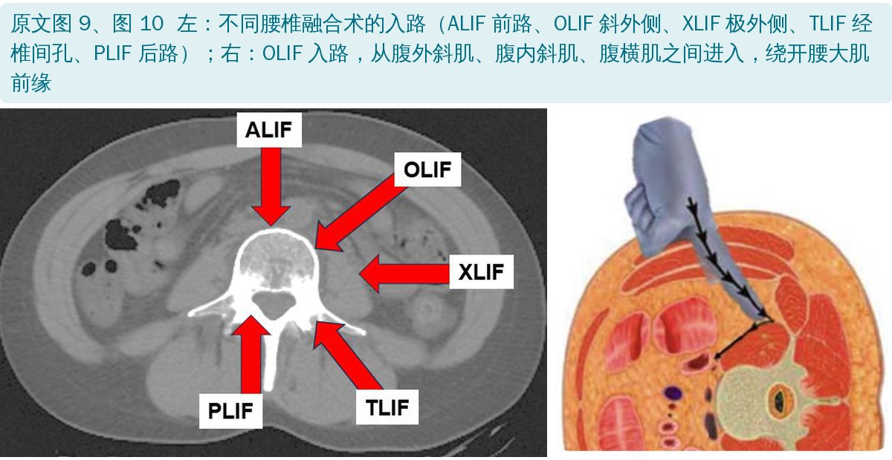
• 后路（PLIF、TLIF）：切开、剥离多裂肌和竖脊肌，去神经支配后出现肌萎缩
• 侧路（XLIF、OLIF）：切开腹外斜肌、腹内斜肌、腹横肌；XLIF 要劈开腰大肌，术后腰大肌无力发生率 9%～31%；OLIF 不劈腰大肌，也有约 1.2% 出现无力
• 侧路创伤小、能放更大的椎间融合器、更好地恢复腰椎前凸，近年越来越常用
• 躯干伸肌和屈肌力量都和 ODI 强相关，所以康复要按术式针对受累肌群
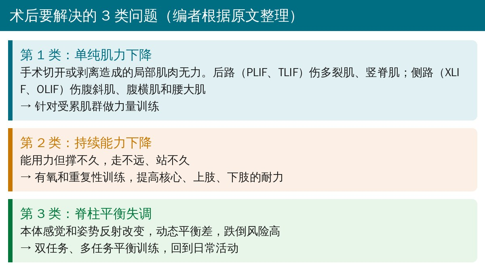
🔖术后要解决的 3 类问题（编者根据原文整理）
融合后，相邻节段的活动会代偿性增加。所以早期力量训练要保持腰椎中立位，减少融合节段和相邻节段的应力，避免内固定断裂或拔出。
功能性中立位脊柱控制训练（NSCE）的思路是：动四肢、给躯干施加干扰，逼躯干肌把腰盆稳住，模拟提、推、拉等日常动作。目标有两个：控制好中立位腰椎；提高躯干和髋部肌肉的协调和力量。
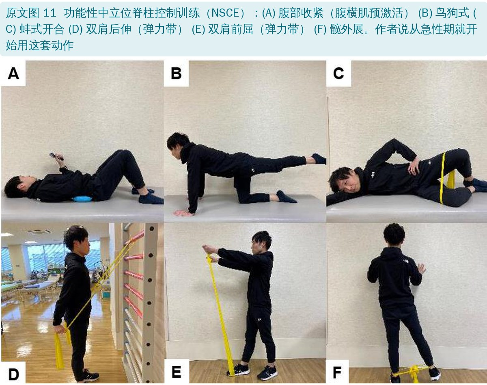
• XLIF 劈开腰大肌，OLIF 用于成人脊柱畸形矫形时也会让腰大肌力量下降
• 作者认为腰大肌力量和术后步行晃动、骨融合率都有关
• 练的姿势有讲究：作者认为腰大肌在腰椎前凸时起伸腰作用、在后凸时起屈腰作用，而腰椎后凸会影响日常生活、促发邻近节段退变，所以要在保持腰椎生理前凸的姿势下练：坐位屈髋、靠墙站立屈髋
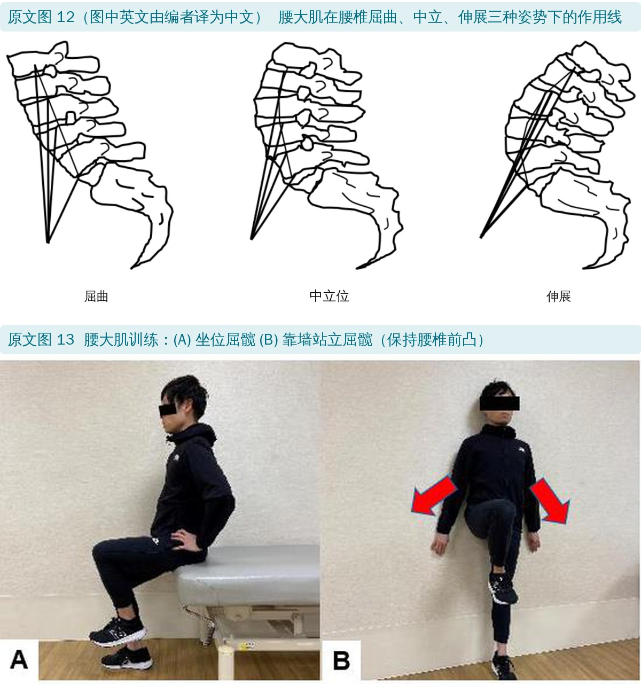
• 长节段胸腰椎融合的患者髋部骨折风险明显高于只做椎间盘切除的患者
• 成人脊柱畸形矫形融合后，患者有本体感觉改变、感觉运动整合失败和姿势反射障碍；动态平衡要到术后 6 个月左右才改善
• 单任务平衡训练的效果不会自动迁移到双任务，所以要专门练“分心时的平衡”
• 作者用的是 Halvarsson 老年人平衡训练方案（覆盖 BESTest 6 个系统中的 5 个）：端托盘走、闭眼站平衡垫、平衡垫上接球、绕杆走加认知任务
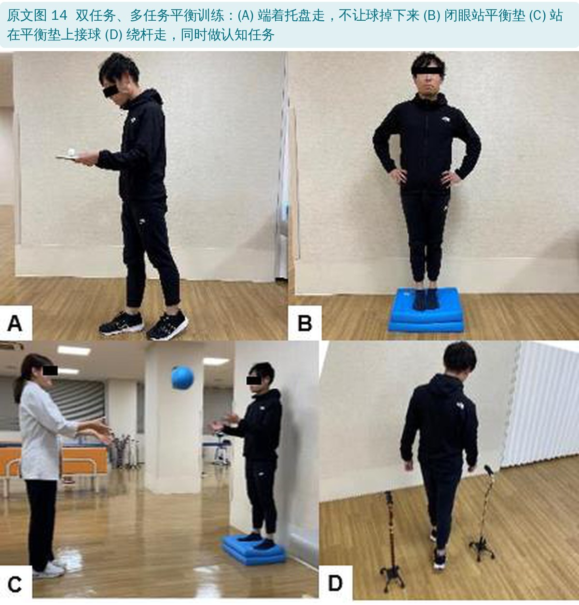
• 融合超过 4 个节段的患者，腰椎僵硬带来的受限更多
• 成人脊柱畸形矫形融合后，即使到术后 2 年，捡地上的东西、剪脚趾甲、个人卫生、穿裤子仍然困难
• 融合到骨盆的患者要学会用辅具，避免内固定失败：侧卧起身、拾物器、穿裤 / 穿袜辅具、鞋拔
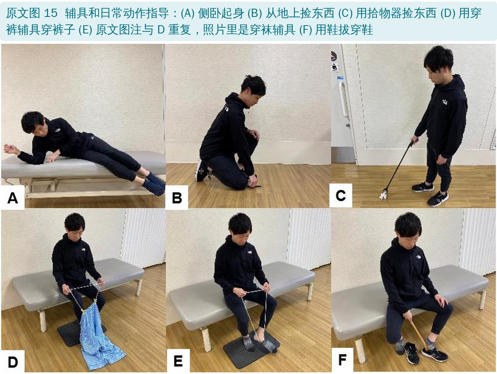
Rohlmann 等在椎体切除术后植入了可测力的椎体假体，直接测量脊柱负荷。负荷大的日常动作：弯腰从地上提重物、手持重物前举、系鞋带、向前弯腰，融合术后要教患者避免。
负荷大的训练动作，骨融合之前不要做：仰卧双腿抬起、仰卧抬臀（桥式）、四点跪位伸单臂（或同时伸对侧腿，即鸟狗式）、四点跪位拱背。老年人和肥胖患者有些动作本来就做不了，治疗师要挑合适的动作。
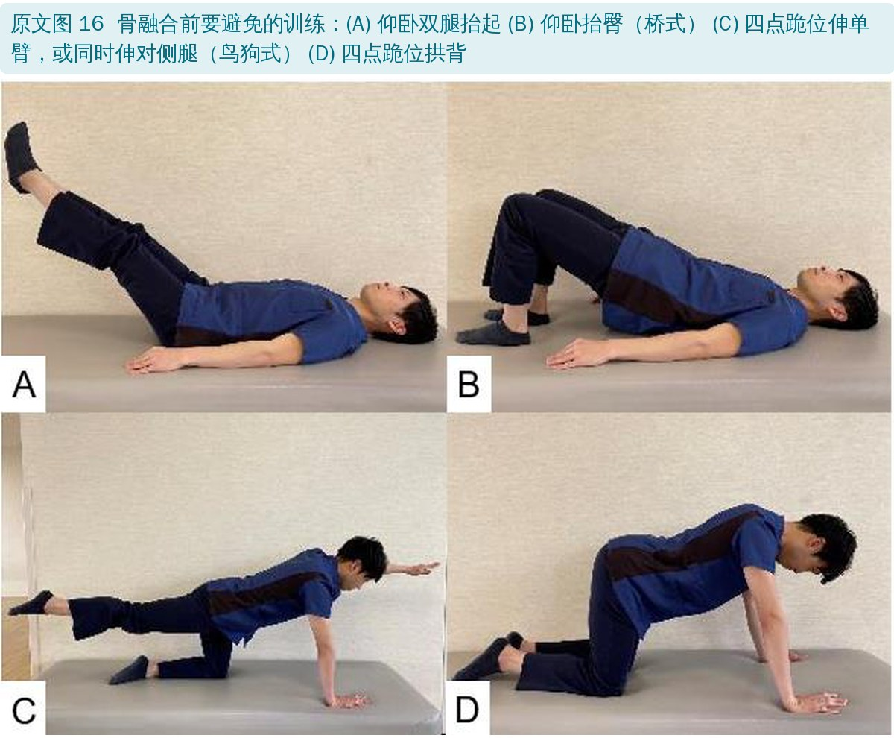
• 叙述性综述，不是系统综述：摘要按“材料与方法、结果”写，但正文没有检索策略、纳入标准和证据质量评价，“结果”其实是作者观点
• 很多是作者团队自己的做法：NSCE、腰大肌训练、平衡训练和辅具指导的图都来自作者医院，没有给出疗效数据；步速、TUG 的 MCID 等多处引用作者自己的研究
• “3 类问题”的分法没有出处：肌力 → 耐力 → 平衡的分类是作者提出的，没有验证，也没有给出各阶段的时间、强度、频率
• 题目是“成人腰椎术后”，内容偏长节段融合：平衡、辅具和 MCID 很多来自成人脊柱畸形矫形融合，对单节段减压或椎间盘切除的患者未必适用
• 没有给出开始时间和进阶标准：哪些训练术后几天开始、什么时候算“骨融合”、怎么判断可以解禁，都没有交代
• 认知行为疗法只在摘要和结论里出现：正文几乎没讲
• 优点：评估部分把常用量表、体能测试和 MCID 汇总在一起，查起来方便；“按入路找受累肌群”和“骨融合前避免高负荷动作”两条很实用，配图清楚
• 鸟狗式前后矛盾：图 11 把鸟狗式列为“从急性期就开始用”的中立位控制训练；图 16 和正文又把“四点跪位伸单臂或同时伸对侧腿”列为骨融合前应避免的动作，两张图里是同一个动作
• ODI 分级用错了：原文写“0～4 分无障碍、5～14 轻度、15～24 中度、25～34 重度、35～50 完全障碍”，这是颈椎功能障碍指数（NDI）的原始分分级。ODI 的常用分级（Fairbank）是按百分比：0～20% 轻微、21～40% 中度、41～60% 重度、61～80% 严重残疾、81～100% 卧床
• LSDI 一节写成了 SRS-22：“The SRS-22 Cronbach’s alpha values for lumbar fusion patients were reported at 0.89 [58]”，引用的是 LSDI 的验证研究，应为 LSDI
• Mini-BESTest 条目编号错乱：表 5 编号是 1～7、9、10、11、12、13、12、14，缺第 8 项，第 12 项出现两次。按原量表，“闭眼站泡沫垫”是第 8 项、“闭眼站斜坡”第 9 项，步态部分应为 10～14
• 表 1 和正文、参考文献对不上：正文写“Pleasant”，表 1 写“Pheasant”，引用号一处 [18] 一处 [20]；正文讲 Calliet 的观点时标 [20]（实为 Pheasant 1962 的文章），表 1 写 Calliet 1968、标 [21]，而 [21] 是 Cailliet 1998 年出版的书；McKenzie 写 1979 年，引用的 [23] 是 1994 年的一封短信
• 参考文献张冠李戴：“BESTest 已用于评估成人脊柱畸形的平衡 [84,85]”“成人脊柱畸形患者 BESTest 比健康老人差 [84]”，[84] 是帕金森病患者的脊柱柔韧性研究，[85] 是功能性前伸的策略研究，应为 [89,90]；“腰大肌力量和成人脊柱畸形矫形后的步行晃动有关 [87]”，[87] 是腰椎间盘显微切除术后肌肉健康的研究；TUG“与下肢肌力、平衡、跌倒风险高度相关 [72]”，[72] 是慢性呼吸疾病步行试验的系统综述
• 参考文献 [26] 的链接不对：标题是 WHO《世界残疾报告》第 4 章，链接却指向北美脊柱外科学会（NASS）的腰椎间盘突出指南 PDF
• 用颈椎研究支撑腰椎结论：“既往物理治疗的获益证据较弱 [10,11]”，[11] 是颈神经根病术后物理治疗的随机试验
• 表 3 的“MCID”不全是 MCID：Solberg [36] 的题目就是“substantial amount of improvement”，ODI 20 分是“显著改善”阈值，不是最小临床重要差异；表里“Lumber”应为“Lumbar”
• 腰大肌功能的说法和所引文献不太一致：正文说腰大肌“前凸时伸腰、后凸时屈腰”，引用 Santaguida 和 McGill 1995 的几何学研究；据编者了解，该研究的主要结论是腰大肌产生腰椎屈伸力矩的能力很小，作用以压缩和剪切为主
• 图 15 两个图注一样：D 和 E 都写“用穿裤辅具穿裤子”，但两张照片动作不同，E 看起来是穿袜辅具
• “WHO 1980 年采用生物—心理—社会模式”：WHO 1980 年发布的是《国际损伤、残疾和残障分类》（ICIDH），一般认为它还是偏医学模式；明确采用生物—心理—社会框架的是 2001 年的 ICF
• “终生复发率高达 85% [1]”：腰痛文献里常见的 84%～85% 一般指终生患病率，不是复发率，编者未在所引文献中核到“复发率”的说法
• 一篇综述有伦理审批和“数据收集”：声明里写经冈山劳灾医院伦理委员会批准（No. 484，2024 年 4 月 8 日，投稿前一天），作者贡献里 4 人负责“数据收集”，数据可用性写“数据见文中”，但全文没有任何原始数据
• 结论句不通：“物理治疗、认知行为疗法和日常生活活动被用于通过 PRO 和体能测试来评估腰椎疾病”，把干预和评估混在一起
• 小笔误：“muscles of truck”应为 trunk（躯干）；“elector spine”应为 erector spinae（竖脊肌）；图 11 “Drow-in”应为 Draw-in；“Wiliams”“lumber”多处拼错；“fat patients”措辞不当
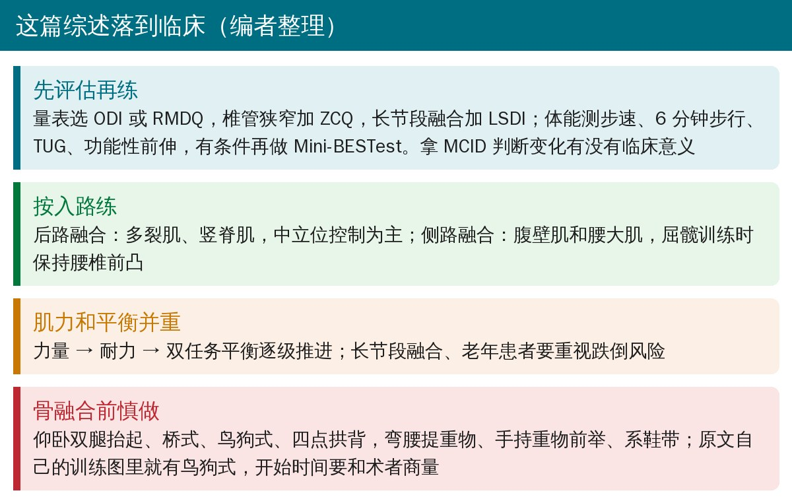
🔖临床要点（编者整理）
• 先评估再练：一个功能量表（ODI 或 RMDQ）+ 一组体能测试（步速、6 分钟步行、TUG、功能性前伸），用 MCID 判断变化是否有意义；注意 MCID 要找对口的术式和人群
• 按入路找受累肌群：后路练多裂肌、竖脊肌，中立位控制为主；侧路关注腹壁肌和腰大肌，屈髋训练时保持腰椎前凸
• 别只练力量：长节段融合、老年患者跌倒和髋部骨折风险高，要从静态平衡逐步过渡到双任务平衡
• 骨融合前避开高负荷动作：仰卧双腿抬起、桥式、鸟狗式、四点拱背，以及弯腰提重物、手持重物前举、系鞋带；鸟狗式原文前后矛盾，具体何时开始建议和术者商量
• 融合到骨盆的患者：提前教侧卧起身和拾物器、穿裤 / 穿袜辅具、鞋拔的用法
• 这是一篇经验性的叙述综述，训练方案没有疗效数据，可以当作框架参考，具体强度和时间要结合术式、内固定情况和患者个体
欢迎关注骨科康复小黄公众号，获取更多物理治疗的专业知识！
📄参考文献：
Sakaguchi T, Gunjotikar S, Tanaka M, Komatsubara T, Latka K, Ekade SJ, Prabhu SP, Takamatsu K, Yasuda Y, Nakagawa M. Evaluation and Rehabilitation after Adult Lumbar Spine Surgery. J Clin Med. 2024;13(10):2915. doi:10.3390/jcm13102915
原文以 CC BY 4.0 协议开放获取（© 2024 by the authors，MDPI 出版）。本文为学术交流中文解读：原文图 3、4、5、7、12 中的英文由编者译为中文，其余原文图未改动，图注为编者翻译；表格为编者中文翻译或整理，部分有删减；首图、三类问题卡和临床要点卡为编者根据原文整理。原文附录的 RMDQ、ODI 问卷有各自的版权，本文未转载。仅供学习交流，如有侵权请联系删除。